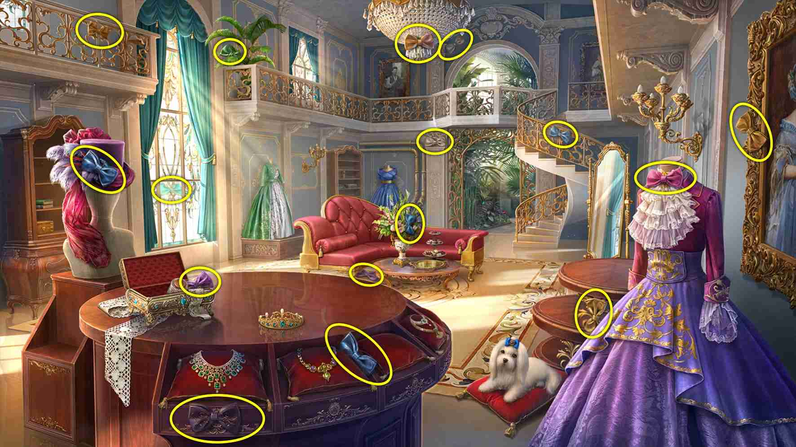

返回
Wiki
德拉莫德设计室 Atelier_Delamode
A爱情
B报纸
B菠萝
C长笛
D吊裤带
F缝纫机
F缝纫用品
F风铃
G拐杖
G挂锁
J剪刀
J奖杯
J戒指盒
K咖啡杯
K孔雀
L两只鸽子
L旅行袋
L留声机
L礼物
L落地灯
L领结
M名片
M迷宫
M面具
N柠檬汁
N鸟笼
P皮草围巾
Q情书
Q汽水
R日历
S伞
S扇子
S手套
S梳子
S狮子
S竖琴
T糖果
W望远镜
W玩偶
X写生簿
X心形
X星星
X鞋子
X香槟
X香烟盒
Y云尺
Y月亮
Y熨斗
Y衣架
Y钥匙
Y音乐
Y饮料
Y鸢尾花纹
Z针垫
Z钟
活动隐藏物品 Event Hidden Object
N鸟笼 Birdcage
R日历 Calendar
T糖果 Candy
G拐杖 Cane
L旅行袋 Carpetbag
X香槟 Champagne
X香烟盒 Cigarette Case
Z钟 Clock
K咖啡杯 Coffee Cup
W玩偶 Doll
L落地灯 Floor Lamp
C长笛 Flute
Y云尺 French Curve
P皮草围巾 Fur Boa
L礼物 Gift
S手套 Gloves
S扇子 Hand Fan
Y衣架 Hanger
S竖琴 Harp
X心形 Heart
Y熨斗 Iron
N柠檬汁 Jug of Lemonade
Y钥匙 Keys
8 items:
At bottom of stairway
M迷宫 Labyrinth
S狮子 Lion
Q情书 Love Letters
M面具 Mask
Y月亮 Moon
B报纸 Newspaper
G挂锁 Padlock
K孔雀 Peacock
L留声机 Phonograph
Z针垫 Pincushion
B菠萝 Pineapple
J戒指盒 Ring Box
J剪刀 Scissors
F缝纫机 Sewing Machine
X鞋子 Shoes
X写生簿 Sketchbook
Q汽水 Soda
D吊裤带 Suspenders
W望远镜 Telescope
J奖杯 Trophy Cup
L两只鸽子 Two Doves
S伞 Umbrella
M名片 Visiting Cards
F风铃 Wind Chimes
L领结 Bow Tie

1 items:
On upper right side of sunroom arch filigree (white)
S梳子 Comb
Y鸢尾花纹 Fleur de Lis
X星星 Star
Y饮料 Beverages
X香槟
K咖啡杯
N柠檬汁
Q汽水
A爱情 Love
X心形
Q情书
J戒指盒
L两只鸽子
Y音乐 Music
C长笛
S竖琴
L留声机
F风铃
F缝纫用品 Sewing Notions
Z针垫
J剪刀
F缝纫机
Y云尺